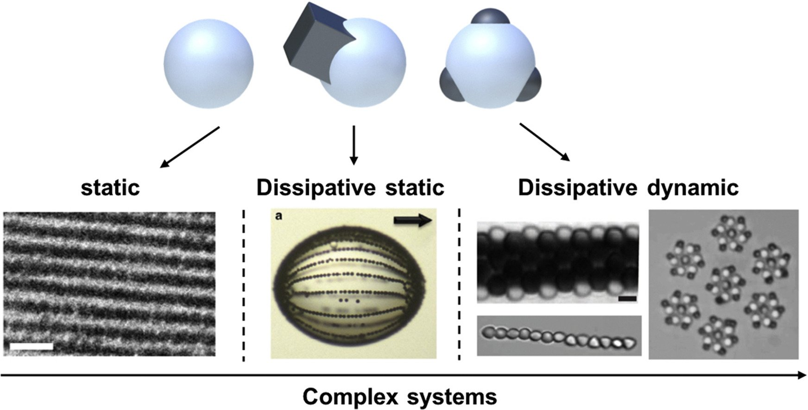

Paul Monceyron Røren, Kristoffer William Bø Hunvik, Vegard Josvanger, Ole Tore Buset and Jon Otto Fossum
Journal of Applied Crystallography Accepted for publication, (2020)
Kristoffer W. Bø Hunvik, Patrick Loch, Leide P. Cavalcanti, Konstanse Kvalem Seljelid, Paul Monceyron Røren, Svemir Rudic, Dirk Wallacher, Alexsandro Kirch, Kenneth Dahl Knudsen, Caetano Rodrigues Miranda, Josef
Breu, Heloisa N. Bordallo and Jon Otto Fossum
Journal of Physical Chemistry C Accepted for publication, (2020)
L. Michels, C. L. S. da Fonseca, Y. Méheust, M. A. S. Altoé, E. C. dos Santos, G. Grassi, R. Droppa Jr., K. D. Knudsen, L. P. Cavalcanti, K. W. B. Hunvik, J. O. Fossum, G. J. da Silva, and H. N. Bordallo
Journal of Physical Chemistry C 124, 24690−24703 (2020)
Patrick Loch, Kristoffer William Bø Hunvik, Florian Puchtler, Sebastian Weiß, Konstanse Kvalem Seljelid, Paul Monceyron Røren, Svemir Rudic, Steinar Raaen, Kenneth Dahl Knudsen, Heloisa N.Bordallo, Jon Otto Fossum,
Josef Breu
Applied Clay Science 198, 105831 (2020)
Jon Otto Fossum
European Physical Journal Special Topics 229, 2863–2879 (2020)
Ana C. Trindade, Miguel Carreto, Geir Helgesen, Kenneth D. Knudsen, Florian Puchtler, Josef Breu, Susete Fernandes, Maria Helena Godinho, Jon Otto Fossum
European Physical Journal Special Topics 229, 2741–2755 (2020)
Simon R.Larsen, Leander Michels, Éverton C.dos Santos, Marcella C. Berg, Will P.Gates, Laurie P.Aldridge, Tilo Seydel, Jacques Ollivier, Mark T.F.Telling, Jon Otto Fossum, Heloisa N.Bordallo
Microporous and Mesoporous Materials 306, 110512 (2020)
P. H. Michels-Brito, L. Michels, K. W. B. Hunvik, E.C. dos Santos, B. Pacáková, L. P. Cavalcanti, K. D. Knudsen, H. N. Bordallo and J. O. Fossum
Materials and Devices Accepted for publication (2020)
Steinar Raaen and Kristoffer W.B. Hunvik
Applied Surface Science 528, 146955 (2020)
E. Dashtimoghadam, H. Salimi-Kenari, R. Nasseri, K.D. Knudsen, H. Mirzadeh, B. Nyström,
Colloids and Surfaces A: Physicochemical and Engineering Aspects 590, 124489 (2020)
K.D. Knudsen, S.C. Simon, T. Geue, C. Joshaniel F. K., J. Sjøblom,
Energy & Fuels 34, 6768-6779 (2020)
J. Trousil, O. Pavlis, P. Kubickova, M. Škorič,V. Marešová, E. Pavlova, K.D. Knudsen, Y-S. Dai, M. Zimmerman, V.A. Dartois, J-Y. Fang, M. Hrubý,
Journal of Controlled Release 321, 312-323 (2020)
K. Lesniak-Ziolkowska, A. Kazek-Kesik, K. Rokosz, S. Raaen, A. Stolarczyk, M. Krok-Borkowicz,E. Pamula, M. Golda-Cepa, M. Brzychczy-Wloch, MW. Simka,
Materials Science and Engineering C: Materials for Biological Applications 115, 111098 (2020)
D. Predoi, S. Iconaru, P. Liliana; V. Mihai A. Groza, S. Gaiaschi,K. Rokosz,S. Raaen, C.C. Negrila, A-M.Prodan, A. Costescu, M.L. Badea, P. Chapon,
Coatings 10, 516 (2020)
K. Rokosz, T. Hryniewicz, W. Kacalak, K. Tandecka, S. Raaen, S. Gaiaschi,P. Chapon, W. Malorny, D. Matysek, K. Pietrzak, E. Czerwinska, A. Iwanek, L. Dudek,
Materials 13, 828 (2020)
K. Rokosz, T. Hryniewicz,W. Kacalak, K. Tandecka,S. Raaen, S. Gaiaschi, P. Chapon, W. Malorny, D. Matysek, K. Pietrzak, L. Dudek,
Materials 13, 1295 (2020)
Leander Michels, Yves Méheust, Mario A. S. Altoé, Éverton C. dos Santos, Henrik Hemmen, Roosevelt Droppa, Jr., Jon O. Fossum, and Geraldo J. da Silva
Phys. Rev. E 99, 013102 (2019)
Kristoffer W.B.Hunvik, Anna Støvneng, Barbara Pacáková, Steinar Raaen
Applied Surface Science 419, 430-435 (2019)

Ville Liljeström, Chen Chen, Paul Dommersnes, Jon Otto Fossum, André H.Gröschel,
Current Opinion in Colloid & Interface Science 40, 25-41 (2019)
V. F. Motlaq, L. Momtazi, K. Zhu, K.D. Knudsen, B. Nyström,
Journal of Polymer Science Part B: Polymer Physics 57, 524-534 (2019)
N.S. Gjerde, K. Zhu, K.D. Knudsen, B. Nyström,
European Polymer Journal 112, 493-503 (2019)
H.M. Halamish, J. Trousil, D. Rak, K.D. Knudsen, E. Pavlova, B. Nyström, P. Stepanek, A. Sosnik,
Journal of Colloid and Interface Science 553, 512-523 (2019)
S.X. Lai, K.D. Knudsen, B.T. Sejersted, A. Ulvestad, J.P. Mæhlen, A. Koposov,
ACS Applied Energy Materials 2, 3220-3227 (2019)
F. Pooch, M. Sliepen, K.D. Knudsen, B. Nyström, H. Tenhu, F.M. Winnik,
Macromolecules. 52, 1317-1326 (2019)
I. Schlachet, J. Trousil, D. Rak, K.D. Knudsen, E. Pavlova, B. Nyström, A. Sosnik,
Carbohydrate Polymers 212, 412-420 (2019)
V-O. de Haan, K. D. Knudsen
CRYOGENICS 97, 55-62 (2019)
K. Rokosz, T. Hryniewicz, L. Dudek, K. Pietrzak, S. Raaen, W. Malorny, R. Ciuperca,
IOP Conference Series: Materials Science and Engineering 564 (2019)
K. Rokosz, T. Hryniewicz, L. Dudek,K. Pietrzak, S. Raaen, W. Malorny, R. Ciuperca,
IOP Conference Series: Materials Science and Engineering 564 (2019)
K. Rokosz, T. Hryniewicz, S. Gaiaschi, P. Chapon, S. Raaen, L. Dudek, W. Malorny,
Tehnicki Vjesnik 26 (2019)

L. P. Cavalcanti, G. N. Kalantzopoulos, J. Eckert, K. D. Knudsen & J. O. Fossum
Scientific Reports by Nature 8, 11827 (2018)
E.C. dos Santos, W.P. Gates, L. Michels, L.Juranyi, A. Mikkelsen, G.J. da Silva, J.O. Fossum, H.N. Bordallo
Applied Clay Science 166, 288 - 298 (2018)
Simon R. Larsen, Marie Hansteen, Barbara Pacakova, Keld Theodor,Thomas Arnold, Adrian R. Rennie, Geir Helgesen, Kenneth D. Knudsen, Heloisa N. Bordallo, Jon Otto Fossum and Leide P. Cavalcanti
J. Synchrotron Radiaton 25, 915–917 (2018)
N. Gjerde, K. Zhu, B. Nyström, K. D. Knudsen
PCCP 20, 2585-2596 (2018)
V. F. Motlaq, K. D. Knudsen, B. Nyström
J Coll Interf Sci 524, 245-255 (2018)
M. Povia, J. Sottmann, G. Portale, K. D. Knudsen, S. Margadonna, S. Sartori
J Phys Chem C 122, 5917-5923 (2018)
C. Vasilescu, M. Latikka, K. D. Knudsen, V. M. Garamus, V. Socoliuc, R. Turcu, E. Tombácz, D. Susan-Resiga, R. H. A. Ras, L. Vékás
Soft Matter 14, 6648-6666 (2018)

S. Sartori, M. N. Guzik, K. D. Knudsen, M. H. Sørby, J. Teprovich, R. Zidan, B. C. Hauback
J Phys Chem C 122, 18346–18355 (2018)
K. Rokosz, T. Hryniewicz, S. Gaiaschi, P. Chapon, S. Raaen, K. Pietrzak, W. Malorny, J.S. Fernandes
Metals 8, 112 (2018)
K. Rokosz, T. Hryniewicz, W. Kacalak, K. Tandecka, S. Raaen, S. Gaiaschi, P. Chapon, W. Malorny, D. Matysek, L. Dudek, K. Pietrzak
Metals 8, 411 (2018)
K. Rokosz , T. Hryniewicz, S. Gaiaschi, P. Chapon, S. Raaen, D. Matýsek, Ł. Dudek, and K. Pietrzak
Materials 11, 1680 (2018)
K. Rokosz , T. Hryniewicz, S. Gaiaschi, P. Chapon, S. Raaen, W. Malorny, D. Matýsek, and K. Pietrzak, Micromachines 9, 322 (2018)
K. Rokosz, T. Hryniewicz, S. Raaen, D. Matýsek, Ł. Dudek, and K. Pietrzak
Adv. Materials Science 18, 68 (2018)
Leslie Valdes, Irela Perez, Louis Charles de Menorval, Ernesto Altshuler, Jon Otto Fossum, Aramis Rivera
PLoS ONE 12(11): e0187879 (https://doi.org/10.1371/journal.pone.0187879) (2017)

E.C. dos Santos, Z. Rozynek, E.L. Hansen, R. Hartmann-Petersen, R.N. Klitgaard, A. Loebner-Olesen, L. Michels, A. Mikkelsen, T.S. Plivelic, H.N. Bordallo, J.O. Fossum
RSC Advances 7, 26537-26545 (2017)

Alexander Mikkelsen, Paul Dommersnes, Zbigniew Rozynek, Azarmidokht Gholamipour-Shirazi, Marcio da Silveira Carvalho and Jon Otto Fossum
Materials 10, 436 (2017)
Alexander Mikkelsen, Zbigniew Rozynek, Khobaib Khobaib, Paul Dommersnes, Jon Otto Fossum
Colloids and Surfaces A: Physicochemical and Engineering Aspects 532, 252-256 (2017)
I. Ailte, A. B. D. Lingelem, A. S. Kvalvaag, S. Kavaliauskiene, A. Brech, G. Koster, P. Dommersnes, J. Bergan, T. Skotland and K. Sandvig
Traffic: The International Journal of Intracellular Transport 18 176–191 (2017)
K. Rokosz, T. Hryniewicz, S. Raaen, P. Chapon, and L. Dudek
Surface and Interface Analysis 49 303 (2017)
K. Rokosz, T. Hryniewics, S. Raaen, P. Chapon, and F. Prima
International Journal of Advanced Manufacturing Technology 89 2953 (2017)
K. Rokosz, T. Hryniewicz, and S. Raaen
Technical Gazette 24 193 (2017)
Fabrication and characterization of porous coatings obtained by plasma electrolytic oxidation
K. Rokosz, T. Hryniewicz, S. Raaen, and W. Malorny
J. Mechanical and Energy Engineering 1 23 (2017)

A. Gholamipour-Shirazi, M. S. Carvalho, M. Huila, K. Araki, P. Dommersnes & J. O. Fossum
Scientific Reports by Nature 6, 37239 (2016)
P. Dommersnes, A. Mikkelsen & J. O. Fossum
European Physical Journal Special Topics 225, 699-705 (2016)
P. Dommersnes & J. O. Fossum
European Physical Journal Special Topics 225, 715-728 (2016)
A. Gholamipour-Shirazi, M.S. Carvalho & J.O. Fossum
European Physical Journal Special Topics 225, 757-765 (2016)

L. Valdés, D. Hernández, L. Ch. de Ménorval, I. Pérez, E. Altshuler, J.O. Fossum & A. Rivera
European Physical Journal Special Topics 225, 767-771 (2016)

A. Mikkelsen, P. Dommersnes & J. O. Fossum
Revista Cubana De FIsica 33, 50-52 (2016)
S. Suwarno, J.K. Solberg, B. Krogh, S. Raaen, and V.A. Yartys
International Journal of Hydrogen Energy 31, 1699-1710 (2016)
K. Rokosz, T. Hryniewicz, S. Raaen, and P. Chapon
Journal of Advanced Manufacturing Technology DOI 10.1007/s00170-016-8692-3 (2016)
K. Rokosz, T. Hryniewicz, D. Matysek, S. Raaen, J. Valicek, L. Dudek, and M. Harnicarova
Materials 9, 318, DOI 10.3390/ma9050318 (2016)
Bayati S, Galantini L, Knudsen KD, Karin Schillen K.
Colloids and Surfaces A 504, 426-436 (2016)
de Oliveira, J. S.; Sousa, M. H.; Michels, L.; Fossum, J. O.; da Silva, G. J.; Mundim, K. C.; Ribeiro, L.
Revista Processos Químicos 8, 493-505 (2016)
A. Rivera, L. Valdés, J. Jiménez, I. Pérez, A. Lam, E. Altshuler, L.C. de Ménorval, J.O. Fossum, E.L. Hansen, Z. Rozynek
Applied Clay Science 124-125, 150-156 (2016)
M.A.S. Altoé, L. Michels, E.C. dos Santos, R. Droppa Jr, G. Grassi, L. Ribeiro, K.D. Knudsen, H.N. Bordallo, J.O. Fossum, G.J. da Silva
Applied Clay Science 123, 83-91 (2016)
Z. Rozynek, A. Mikkelsen, P. Dommersnes & J. O. Fossum
Nature Communications 5, 3945 (2014)

L. Michels, L. Ribeiro, M. S. P. Mundim, M. H. Sousa, R. Droppa Jr., J. O. Fossum, G. J. da Silva & K. C. Mundim
Applied Clay Science 96, 60-66 (2014)
Z. Rozynek,S. M. de Lima Silva, J. O. Fossum; G. J. da Silva, E. N. de Azevedo,H. Mauroy & T. Plivelic
Applied Clay Science 96, 67-72 (2014)

Z. Rozynek, P. Dommersnes, A. Mikkelsen, L. Michels & J. O. Fossum
European Physical Journal Special Topics 223, 1859–1867 (2014)
G. Grassi, L. Michels, Z. Rozynek, M.A.S. Altoé, E.C dos Santos, C.L.S. da Fonseca, R. Droppa Jr., A. Gholamipour-Shirazi & J. O. Fossum,
and G.J. da Silva
European Physical Journal Special Topics 223 (2014)
A. Julukian, S. Raaen & D. Franke
J. Vacuum Science and Technology B 32, 031803 (2014)
K. D. Knudsen, S. Simon, L. Qassym, B. Gao & J. Sjøblom
Energy and Fuels 28, 4469-4479 (2014)

E.L. Hansen, S. Jabbari-Farouji, H. Mauroy, T.S. Plivelic, D. Bonn & J. O. Fossum
Soft Matter 9, 9999-10004 (2013)
H. Mauroy, T. Plivelic, E.L. Hansen, J.O. Fossum, G. Helgesen & K.D. Knudsen
Journal of Physical
Chemistry C 117, 19656–19663 (2013)
P. Dommersnes, Z. Rozynek, A. Mikkelsen, R.
Castberg, K. Kjerstad, K. Hersvik & J. O. Fossum
Nature Communications 4, 2066 (2013)
Z. Rozynek, R.
Castberg, A. Mikkelsen & J. O. Fossum
Journal of Materials Research 28, 1349-1355 (2013)
A. Józefczak, T.
Hornowski, Z. Rozynek, A. Skumiel & J. O. Fossum
International Journal of Thermophysics 34, 609–619 (2013)
Z. Rozynek, T.
Zacher, M. Janek, M. Caplovicová & J. O. Fossum
Applied Clay Science 77, 1-9 (2013)
H. Mauroy, Z. Rozynek, T. S. Plivelic, J. O. Fossum, G. Helgesen & K. D. Knudsen
Langmuir 29, 371-379 (2013)
X. Yu & S. Raaen
Applied Surface Science 270, 364 (2013)
S. Simon, K. D. Knudsen, E. Nordgård, C. Reisen & J. Sjøblom
J Colloid Interface Sci. 394, 277-283 (2013)
E. L. Hansen, H. Hemmen, D. M. Fonseca, C. Coutant, K. D. Knudsen, T. S. Plivelic, D. Bonn & J. O. Fossum
Scientific Reports by Nature 2, 618 (2012)
J. O. Fossum
European Physical Journal Special Topics 204, 41-56 (2012)
¨
B. Wang, Z. Rozynek, J. O. Fossum, K. D. Knudsen & Y. Yu
Nanotechnology 23, 075706 (2012)
Z. Rozynek, B. Wang, J. O. Fossum & K. D. Knudsen
European Phys. J.l E 35, 27239502 (2012)

H. Hemmen, E, G. Rolseth, D, M. Fonseca, E, L. Hansen, J. O. Fossum & T. S. Plivelic
Langmuir 28, 1678-1682 (2012)
H. Hemmen, E. L. Hansen, N. I. Ringdal & J.O. Fossum
Cuban Journal of Physics, Revista Cubana de Fisica, 29-1E, 59-61 (2012)
Z. Rozynek, H. Mauroy, R. Ch. Castberg, K. D. Knudsen & J. O. Fossum
Cuban Journal of Physics, Revista Cubana de Fisica, 29-1E, 37-41 (2012)
R. Castberg, Z. Rozynek, J. O. Fossum, K. J. Måløy, P. Dommersnes & E. G. Flekkøy
Cuban Journal of Physics, Revista Cubana de Fisica, 29-1E, 17-19 (2012)
H. Hemmen, E. N. de Azevedo, M. Engelsberg, & J.O. Fossum
Proceedings of 2nd Int. Workshop on Complex Physical Phenomena in Materials, Porto de Galinhas (2012)
L. E. Michels, H. Hemmen, R. Droppa Jr., G. Grassi, G. J. da Silva & J. O. Fossum
Proceedings of 2nd Int. Workshop on Complex Physical Phenomena in Materials, Porto de Galinhas (2012)
P. A. Sobas, K. D. Knudsen, G. Helgesen, A. Skjeltorp & J. O. Fossum
Proceedings of 2nd Int. Workshop on Complex Physical Phenomena in Materials, Porto de Galinhas (2012)
M. Kildemo, L. M.S. Aas, P. G. Ellingsen, H. Hemmen, E. L. Hansen & J. O. Fossum
Optical Measurement Systems For Ind. Inspec. VII: Proceedings of SPIE, 8082, 808221 (2011)
Y. Méheust, K. Parmar, B. Schjelderupsen & Jon Otto Fossum
J. Rheol. 55, 809-833 (2011)
Z. Rozynek, A. Jozefczak, K. D. Knudsen, A. Skumiel, T. Hornowski, J.O. Fossum, M.Timko, P. Kopcansky & M. Koneracka
Eur. Phys. J. E34, 28 (2011)
H. Hemmen, Y. Meheust & J.O. Fossum
Phys.Rev. E 83, 019901(E) (2011)
L. Ribeiro, G. J. Silva, M. S. P. da, Mundim, M. H. Sousa, J. O. Fossum & K. C. Mundim
Revista Processos Químicos 5(10) (2011)
A. Julukian, T. Fadnes, S. Raaen & M. Balci
J. Applied Physics 109, 123503 (2011)
M. Zhou, B. Wang, Z. Rozynek, Z. Xie, J. O. Fossum, X. Yu & SS Raaen
Nanotechnology 20, 505606 (2009)
A. Khaldoun, P.Moller, A. Fall, G.Wegdam, B. De Leeuw, Y. Meheust, J.O. Fossum & D. Bonn
Phys.Rev.Lett. 103, 188301 (2009)
H. Hemmen, N. I. Ringdal, E. N. De Azevedo, M. Engelsberg, E. L. Hansen, Y. Meheust, J. O. Fossum & K. D. Knudsen
Langmuir 25, 12507–12515 (2009)
F.L.O. Paula, G.J. da Silva, R. Aquino, J. Depeyrot, J.O. Fossum, K.D. Knudsen, G. Helgesen & F.A. Tourinho
Brazilian Journal of Physics 39, 163-170 (2009)
B. Wang, M. Zhou, Z. Rozynek & J. O. Fossum
J. Mater. Chem. 19, 1816 (2009)
Z. Rozynek, B. Wang, M. Zhou, & J.O. Fossum
J. of Physics: Conf. Ser. 149, 012026 (2009)
B. Wang, Z. Rozynek, M. Zhou & J.O. Fossum
Journal of Physics: Conference Series 149, 012032 (2009)
D. d.M.Fonseca, Y. Meheust, J.O. Fossum, K.D. Knudsen & K.P.S. Parmar
Phys.Rev.E 79, 021402 (2009)
H. Tollefsen, E.O. Laastad & S. Raaen
Surface Science 603, 197 (2009)
H. Tollefsen & S. Raaen
Philosophical Magazine 89, 1035 (2009)
H. Tollefsen & S. Raaen
J. Applied Physics 105, 123501 (2009)
E. N. de Azevedo, L. R. Alme, M. Engelsberg, J. O. Fossum & P.Dommersnes
Phys.Rev. E 78, 066317 (2008)
G. Chinga-Carrasco, H. Kauko, M. Myllys, J. Timonen, B. Wang, M. Zhou & J. O. Fossum
J. Microscopy 232, 212 (2008)
K. Parmar, Y. Méheust, B. Schjelderupsen & J. O. Fossum
Langmuir 24, 1814 (2008)
R. Tenorio, L. Alme, M. Engelsberg, J. O. Fossum & Fernando Hallwass
J.Phys.Chem.C 112, 575 (2008)
H. Tollefsen, E.O. Laastad, X. Yu & S. Raaen
Philosophical Magazine 88, 665 (2008)
M. Juel, S. Martinsen & S. Raaen
Thin Solid Films 517, 805 (2008)
X. Yu, M. Tverdal, S. Raaen, G. Helgesen & K.D. Knudsen
Applied Surface Science 255, 1906 (2008)
E.N. de Azevedo, M. Engelsberg, J.O. Fossum & R.E. de Souza
Langmuir 23, 5100 (2007)
J.O. Fossum, Y. Méheust, K.P.S. Parmar, K.D. Knudsen, K.J. Måløy & D. d.M.Fonseca
ESRF Scientific Highlights (2007)
F.L.O. Paula, R. Aquino, G.J. da Silva, J. Depeyrot, F.A. Tourinho, J.O. Fossum & K.D. Knudsen
J.Appl.Cryst. 40, 269 (2007)
Y. Meheust, S. Dagois-Bohy, K. D. Knudsen & J. O. Fossum
J.Appl.Cryst. 40, 286 (2007)
D. d.M.Fonseca, Y. Méheust, J.O. Fossum, K.D. Knudsen, K.J. Måløy & K.P.S. Parmar
J.Appl.Cryst. 40, 292 (2007)
L. Ribeiro, M.S.P. Mundim, G.J da Silva, J.O. Fossum & K.C. Mundim
J. Electron. Spectrosc. Relat. Phenom. 156 : XCIV MAY (2007)
M. Juel, B.T. Samuelsen, M. Kildemo & S. Raaen
Surface Science 601, 2917 (2007)
H. Tollefsen, L.J. Berstad & S. Raaen
J. Vac. Sci. & Technol. A 25, 1433 (2007)
B. Vermang, M. Juel & S. Raaen
J. Vac. Sci. & Technol. A 25, 1512 (2007)
Y. Meheust, K.D. Knudsen & J.O. Fossum
J.Appl.Cryst. 39, 661 (2006)
J. O. Fossum
Dynamics of Complex Interconnected Biosensor Systems: Networks and Bioprocesses, Belushkin eds., Springer (2006)
Y. Meheust, B. Sandnes, G. Løvoll, K.J. Måløy, J.O. Fossum, G.J. da Silva, M.S.P. Mundim, R. Droppa & D.de Miranda Fonseca
Clay Science 12, 66 (2006)
J.O. Fossum, Y. Méheust, K.P.S. Parmar, K.D. Knudsen, K.J. Måløy & D. d.M.Fonseca
Europhys. Lett. 74, 438-444 (2006)
B. Vermang, M. Juel & S. Raaen
Physical Review B 73, 033407 (2006)
M. Kildemo, U. Grossner, M. Juel, B.T. Samuelsen, B. Svennson & S. Raaen
J. Applied Physics 99, 013703 (2006)
M. Juel, B.T. Samuelsen & S. Raaen
Surface Science 600, 1160 (2006)
M. Kildemo, U. Grossner, M. Juel, B. Svensson & S. Raaen
Surface Science 600, 1300 (2006)
M. Kildemo & S. Raaen
Physical Review B 73, 205338 (2006)
M. Kildemo, U. Grossner & S. Raaen
J. Applied Physics 100, 053706 (2006)